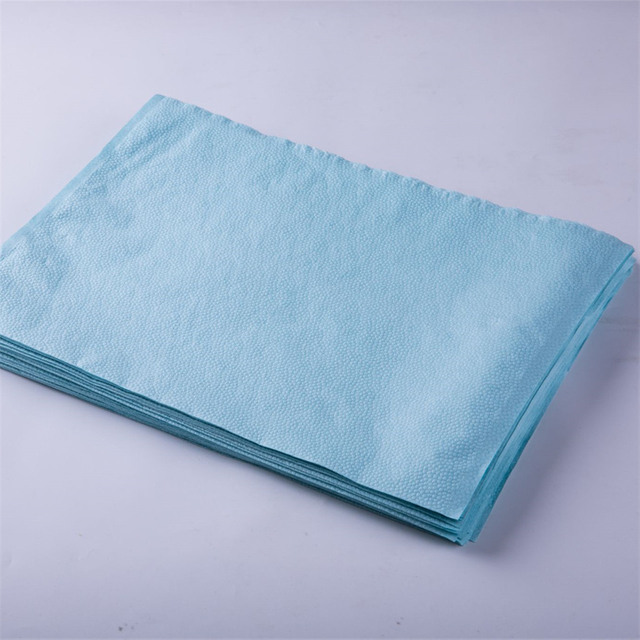

Healthcare workers face constant exposure to pathogens, bodily fluids, and hazardous substances. While gloves and face masks protect the hands and respiratory system, the largest surface area of potential contamination is the body and clothing. A single shift in a busy hospital can involve dozens of patient encounters, each with a risk of splash, spray, or contact with contaminated surfaces. Protective clothing — worn over or instead of personal clothing — is the primary barrier between the healthcare worker and the clinical environment.
The term "protective clothing" in healthcare encompasses a wide range of products. Disposable coveralls provide head-to-toe coverage for high-risk scenarios. Lab coats offer a lighter layer for routine clinical examinations. Isolation suits are designed for patients and visitors in isolation zones. Examination gowns serve as a middle ground — more protective than a lab coat, less cumbersome than a full coverall. Choosing the right type, material, and protection level for each department is a critical procurement decision.
Disposable Coveralls
Disposable coveralls — sometimes called "hazmat suits" or "protective coveralls" — are one-piece garments that provide full-body coverage, typically including an integrated hood, elasticated cuffs at the wrists and ankles, and a front zipper with a storm flap. They are designed for environments where the wearer may be exposed to significant amounts of infectious material or hazardous substances.
Materials and Construction
Coveralls are manufactured from nonwoven fabrics, most commonly SMS (spunbond-meltblown-spunbond) polypropylene or microporous PE film laminated to a nonwoven substrate. SMS fabrics are breathable and comfortable for extended wear, while PE film laminates offer a higher level of liquid barrier protection but are less breathable. The choice between these materials depends on the intended use case: SMS for general isolation and laboratory work, PE film for situations where large volumes of liquid or chemical exposure are anticipated.
Quality coveralls feature serged seams (stitched and sealed with thread) for Type 5 and Type 6 applications, or taped seams (additional adhesive tape covering the seam) for higher-risk Type 3 and Type 4 applications. The zipper is typically covered by an adhesive storm flap to prevent liquid penetration through the zipper teeth.
Best Use Cases
- Infectious disease wards. When caring for patients with highly transmissible pathogens — such as Ebola, COVID-19 in its acute phase, or multidrug-resistant organisms — coveralls provide the highest level of body protection available in disposable form.
- Laboratory biosafety levels 2 and 3. Technicians handling infectious specimens, cultures, or performing procedures that generate aerosols require full-body coverage that extends beyond standard lab coats.
- Operating theatres and surgical suites. In lengthy surgical procedures where blood and fluid exposure is significant, coveralls (worn over surgical scrubs) protect the surgical team more comprehensively than a standard surgical gown.
- Environmental cleaning and decontamination. Housekeeping staff cleaning isolation rooms, operating theatres between surgeries, or any environment where chemical disinfectants and biological contaminants are present benefit from the full coverage of a coverall.
- Disaster response and hazmat situations. Coveralls are standard personal protective equipment for first responders dealing with chemical spills, biological contamination, or mass casualty incidents involving unknown hazardous materials.
Limitations
Coveralls are the most expensive and least comfortable type of disposable protective clothing. They can cause heat stress during extended wear, particularly in tropical climates or non-air-conditioned environments. Donning and doffing a coverall correctly requires training and time, which makes them impractical for quick patient interactions or rapid-response scenarios. They should be reserved for situations where the exposure risk justifies the investment.
Disposable Lab Coats
Disposable lab coats are lightweight, knee-length or mid-thigh garments with a front opening (typically secured with snap buttons or ties), long sleeves with elasticated or knit cuffs, and two or more front pockets. They are designed to protect personal clothing from minor splashes, dust, and dry particulate contamination — not from heavy fluid exposure.
Materials and Construction
Lab coats are commonly made from a single layer of spunbond polypropylene or a light SMS fabric. The material is thin enough to be comfortable for all-day wear but provides a meaningful barrier against dry particles and light splashes. Some lab coats include a PE film strip across the chest for additional fluid resistance in the most exposure-prone area.
Best Use Cases
- Outpatient clinics and general examinations. For routine patient visits where the risk of significant fluid exposure is low, a disposable lab coat provides a clean, professional appearance while protecting the clinician's clothing from incidental contact.
- Pharmacy dispensing and compounding. Pharmacists and pharmacy technicians handling medications, preparing IV admixtures, or working in cleanroom environments use lab coats to prevent cross-contamination between the pharmacy and external environments.
- Administrative and reception areas in healthcare facilities. Staff who move between clinical and administrative areas wear lab coats to prevent carrying contaminants from clinical zones into office spaces.
- Training and educational settings. Medical students, nursing trainees, and allied health learners use disposable lab coats during practical training sessions, providing a hygienic alternative to laundering shared cloth lab coats between uses.
- Food service in healthcare facilities. Kitchen and dining staff in hospitals and care homes wear lab coats or similar disposable garments to maintain hygiene standards when preparing and serving patient meals.
Limitations
Lab coats offer minimal fluid protection. A significant splash of blood or bodily fluids will penetrate a standard lab coat quickly. They should not be used as a substitute for gowns or coveralls in moderate to high-risk environments. Additionally, lab coats do not cover the lower legs, leaving them unprotected.
Isolation Suits (Patient and Visitor Garments)
Isolation suits — sometimes referred to as "patient gowns" or "isolation wear" — are designed for patients and visitors who need to leave their room for a procedure, transport, or outdoor exercise while remaining in an isolation protocol. They are typically looser-fitting than coveralls and easier to put on and take off without assistance.
Materials and Construction
Isolation suits for patients and visitors are usually made from a lightweight nonwoven fabric — often spunbond or a thin SMS — that provides a basic barrier against dry particle shedding and light splashes. They typically feature an open-back design with ties or a snap-front closure, and are available in standard adult and paediatric sizes. Unlike coveralls, they are not designed for extended wear by clinical staff and do not include features like taped seams or integrated hoods.
Best Use Cases
- Patient transport within the hospital. When an isolation patient needs to go to radiology, the operating theatre, or another department, an isolation suit minimises the risk of contaminating corridors, lifts, and waiting areas during transit.
- Visitor protection. Visitors entering isolation rooms are often provided with disposable isolation suits (or gowns) to wear over their clothing. This protects the visitor and reduces the risk of them carrying pathogens out of the facility on their clothes.
- Paediatric isolation wards. Children in isolation settings need age-appropriate garments that are easy to put on and remove. Paediatric isolation suits are designed with this in mind, often featuring colourful prints to reduce anxiety.
Examination Gowns
Examination gowns occupy the middle ground between lab coats and coveralls. They are full-length or knee-length garments with a front opening, long sleeves, and a higher level of fluid resistance than lab coats but less comprehensive coverage than coveralls. They are the most commonly used body-protecting garment in general clinical settings.
Materials and Construction
Examination gowns are typically manufactured from SMS fabric, with the meltblown middle layer providing the primary fluid barrier. The fabric weight ranges from approximately 30 to 50 grams per square metre (gsm), with heavier fabrics offering better fluid resistance at the cost of reduced breathability. Some gowns feature a reinforced panel across the chest and sleeves for enhanced protection in high-exposure areas. Knit cuffs at the wrists prevent the sleeves from riding up during procedures, and some gowns include thumb loops for additional security.
Best Use Cases
- General ward nursing care. Nurses performing wound dressings, catheter changes, or other procedures with moderate fluid exposure risk wear examination gowns over their uniform to protect both themselves and the next patient from cross-contamination.
- Emergency departments. ED staff encounter unpredictable exposure scenarios. Examination gowns provide a practical level of protection that can be quickly donned for any patient presenting with potential infectious symptoms.
- Dialysis units and infusion centres. Staff handling intravenous lines, blood products, or dialysis fluid benefit from the fluid-resistant properties of examination gowns during routine procedures.
- Veterinary clinics. Veterinary professionals use examination gowns for the same reasons as human healthcare — protecting clothing and skin from animal fluids, medications, and zoonotic pathogens.
Protection Standards — AAMI and EN Classification
Understanding protection standards is essential for matching the right garment to the right risk level. Two key standards govern medical protective clothing:
AAMI PB70 (US Standard)
The Association for the Advancement of Medical Instrumentation (AAMI) PB70 standard classifies surgical gowns and drapes into four levels based on liquid barrier performance:
- Level 1 (Minimal risk). Suitable for basic care, standard isolation, and visitor coverage. Tested for water penetration at low pressure.
- Level 2 (Low risk). Suitable for procedures with minimal fluid exposure, such as blood draws and suturing. Tested for water penetration at moderate pressure.
- Level 3 (Moderate risk). Suitable for arterial blood draws, IV insertions, and procedures where fluid splash is possible but not voluminous. Tested with both water and blood penetration at elevated pressure.
- Level 4 (High risk). Suitable for surgical procedures with prolonged fluid exposure and for infectious disease care. Tested with a viral penetration challenge using Phi-X174 bacteriophage.
EN 13795 and EN 14126 (European Standards)
EN 13795 covers surgical drapes, gowns, and clean air suits, defining performance requirements for microbial cleanliness, barrier performance, and strength. EN 14126 specifically addresses protective clothing against infective agents, using a coding system (Type 1 through Type 6) to indicate the type of hazard the garment protects against — from gas-tight suits (Type 1) to limited chemical splash protection (Type 6).
Comparison at a Glance
| Feature | Lab Coat | Examination Gown | Isolation Suit | Coverall |
|---|---|---|---|---|
| Coverage | Torso, upper legs | Full body, open back | Full body (loose fit) | Full body + hood ✓ |
| Fluid Resistance | Low | Medium-High | Low-Medium | High ✓ |
| Breathability | Good ✓ | Medium | Good | Low |
| Comfort (Extended Wear) | High ✓ | Medium | Medium-High | Low |
| Donning Speed | Fast ✓ | Fast | Fast | Slow (training needed) |
| Seam Type | Serged | Serged / Taped | Serged | Taped ✓ |
| Typical Material | Spunbond PP | SMS (30-50 gsm) | Spunbond / light SMS | SMS / PE film laminate |
| Relative Cost | Lowest ✓ | Low-Medium | Low | High |
| Best For | Clinics, pharmacy, admin | Wards, ED, dialysis | Patient transport, visitors | ID wards, labs, OR, hazmat |
Sizing and Fit
Protective clothing is available in a range of sizes from small (S) to triple extra-large (3XL) and beyond. A proper fit is essential for both protection and comfort. Garments that are too tight restrict movement and increase the risk of tearing during donning, doffing, or patient care activities. Garments that are too loose can snag on equipment, impede movement, or create gaps where contaminants can reach the skin.
Some manufacturers offer "universal" sizing designed to fit the majority of wearers, but this approach inevitably compromises fit at the extremes of the size range. Facilities with a diverse workforce in terms of body size should stock a range of sizes to ensure every staff member can be properly fitted.
Gender-neutral designs (one pattern for all wearers) are most common in disposable protective clothing, but some suppliers offer gender-specific patterns that provide a better fit for female wearers — particularly in the chest, waist, and hip areas.
Quality and Regulatory Markers
When evaluating protective clothing suppliers, procurement teams should verify the following:
- AAMI PB70 certification. For the US market, garments should be tested and labelled according to AAMI PB70 levels. Request the test report from an accredited laboratory.
- EN 13795 / EN 14126 compliance. For European markets, verify that garments meet the relevant EN standard and carry the CE mark with the notified body number.
- Material weight (gsm). Heavier fabrics generally provide better protection but reduce comfort. A reputable supplier will clearly state the fabric weight for each product.
- Seam integrity. Taped seams provide superior protection to serged seams. Verify which seam type is used for each product and whether it matches the intended risk level.
- Individual packaging. Each garment should be individually sealed to maintain cleanliness during storage and transport.
- Colour coding. Many facilities use colour-coded garments (e.g., blue for general use, yellow for isolation, white for laboratory) to support quick visual identification. Suppliers should be able to provide custom colours.
- Shelf life. Quality disposable protective clothing has a shelf life of at least two to three years when stored in a cool, dry environment.
"We used to stock one type of gown for the entire hospital. When we segmented by department — lab coats for outpatient clinics, examination gowns for wards, and coveralls for the ICU and infectious disease unit — we reduced our per-encounter PPE cost by about 20 percent while actually improving protection for the staff who needed it most." — Infection Control Lead, University Hospital, Sichuan
Industry Trends — Protective Clothing in 2026
- Lighter, stronger nonwovens. Advances in SMS manufacturing are producing fabrics that are lighter and more breathable than previous generations while maintaining or improving liquid barrier performance. This reduces heat stress for clinical staff wearing protective clothing for extended shifts.
- Antimicrobial coatings. Some manufacturers are incorporating antimicrobial agents into the outer layer of examination gowns and coveralls, providing an additional barrier against bacterial growth on the garment surface during multi-hour procedures.
- Sustainable disposal. As the volume of disposable PPE waste grows, some facilities are exploring take-back programmes where used garments are collected and processed through specialised waste-to-energy or recycling channels, rather than general medical waste incineration.
- Smart sizing systems. A growing number of suppliers offer online sizing tools that allow procurement teams to input staff height, weight, and build data to receive a size recommendation for each individual, reducing the number of ill-fitting garments ordered and returned.
- Direct-to-facility sourcing. Following the supply chain disruptions of the 2020s, more hospitals are sourcing protective clothing directly from manufacturers with ISO 13485 certification, rather than through distributors, securing better pricing and greater visibility into production quality.
Conclusion
Disposable protective clothing is not a one-size-fits-all category. Lab coats provide a lightweight, comfortable layer for low-risk clinical and administrative environments. Examination gowns deliver meaningful fluid protection for general ward care, emergency departments, and dialysis units. Isolation suits serve patients and visitors who need to move through the facility while maintaining isolation protocols. Coveralls offer the highest level of body protection for infectious disease care, laboratory biosafety, and surgical procedures.
The most effective protective clothing strategy assigns the appropriate garment type to each department and activity, rather than deploying a single product hospital-wide. This approach optimises both infection control and cost efficiency. Newrise Medical manufactures disposable coveralls, lab coats, examination gowns, and isolation suits in our ISO 13485 and CE certified facility in Changzhou, China. OEM, custom colours, and private-label packaging available. Contact us for samples and pricing →